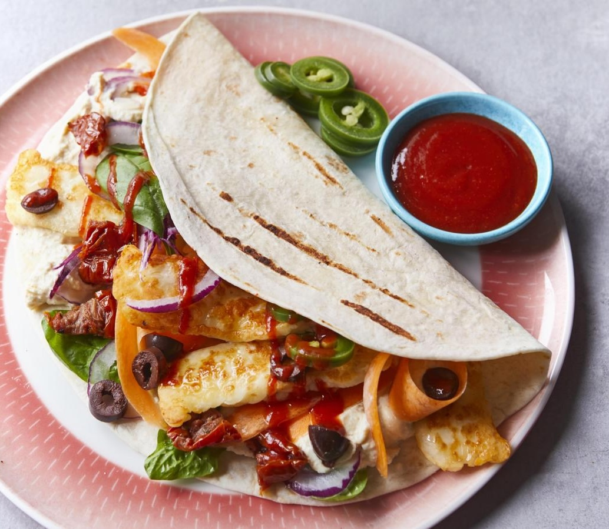
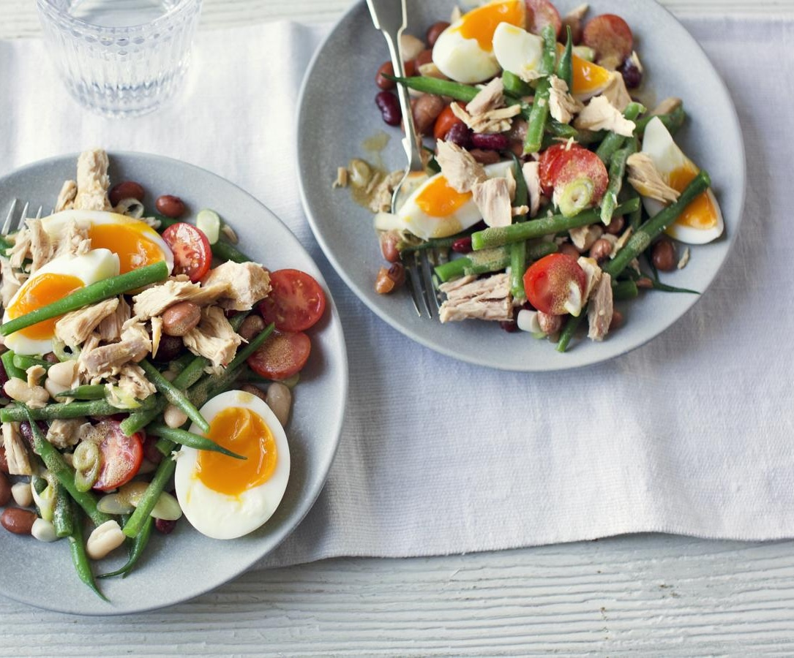

Lunch
Hello and welcome to Healthy Cooking Made Simple! In this page you find a variety of quick and easy
lunch meals to help you start your day a little bit better, and they only get easier each time
you make them.
Halloumi Wrap

Image and recipe sourced from BBC Food.
Once you know how to cook golden, crispy halloumi, the options are endless, but pairing
it with hummus and salad in an easy wrap is a great place to start. If you like it
spicy, add a drizzle of hot sauce.
Each serving provides 790 kcals, 33g protein, 45g carbohydrates (of which 11g sugars)
51g fat (of which 21g saturates), 10g fibre and 4g salt.
Ingredients
100g/3½oz halloumi
1 tbsp olive oil
1 large soft flour tortilla wrap
3 tbsp hummus
1 large carrot, peeled into ribbons
handful spinach leaves
freshly ground black pepper
To serve (optional)
sweet chilli sauce, Tabasco or sriracha
sliced olives, diced sundried tomatoes, pickled chillies, sliced red onion
Method
Slice the halloumi into 1cm/½in thick strips and season with pepper.
Heat the oil in a frying pan over a low–medium heat and fry the halloumi strips for
a few minutes, turning until all sides are golden. If the pan is too hot, the
outside of the halloumi might brown before the centre gets nice and soft, but you
can lift the pan off the heat to reduce the temperature briefly.
Warm the tortilla following pack instructions, then spread the hummus down the
middle. Layer the carrot, spinach and crispy halloumi strips, add any sauces or
toppings you like, then roll up the tortilla and eat while the halloumi is still
warm.
Expand/Hide
Tuna Bean Salad

Image and recipe sourced from BBC Food.
Similar to a tuna Nicoise, this salad has the addition of canned beans for extra fibre.
Use drained and rinsed red kidney beans if you can’t find mixed beans.
With a GI of 50 this meal is high protein, low GI. This meal provides 390 kcal, 39g
protein, 21g carbohydrate (of which 5.5g sugars), 15g fat (of which 3g saturates), 8.5g
fibre and 1.3g salt per portion.
Ingredients
100g/3½oz green beans, halved
2 free-range eggs
400g tin mixed beans in water, drained and rinsed
100g/3½oz cherry tomatoes, halved
4 spring onions, thinly sliced
160g tinned tuna steak in water, drained
For the dressing
1 tbsp extra virgin olive oil
1 tsp red wine vinegar
1 tsp Dijon mustard
freshly ground black pepper
Method
Cook the green beans in a pan of boiling water for 4 minutes. Plunge them into a
bowl of very cold water.
Cook the eggs in a pan of boiling water for 8 minutes. Drain in a sieve under cold
running water until cold. Peel and cut the eggs into quarters.
For the dressing, whisk the oil, vinegar and mustard in a large bowl until thick.
Season with black pepper.
Add the green beans, mixed beans, cherry tomatoes and spring onions to the dressing
and mix. Flake the tuna on top and add the hard-boiled eggs. Season with black
pepper.
Expand/Hide